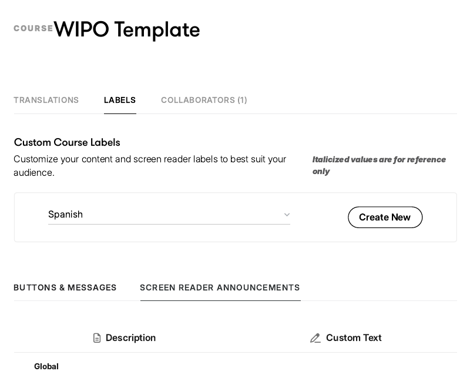
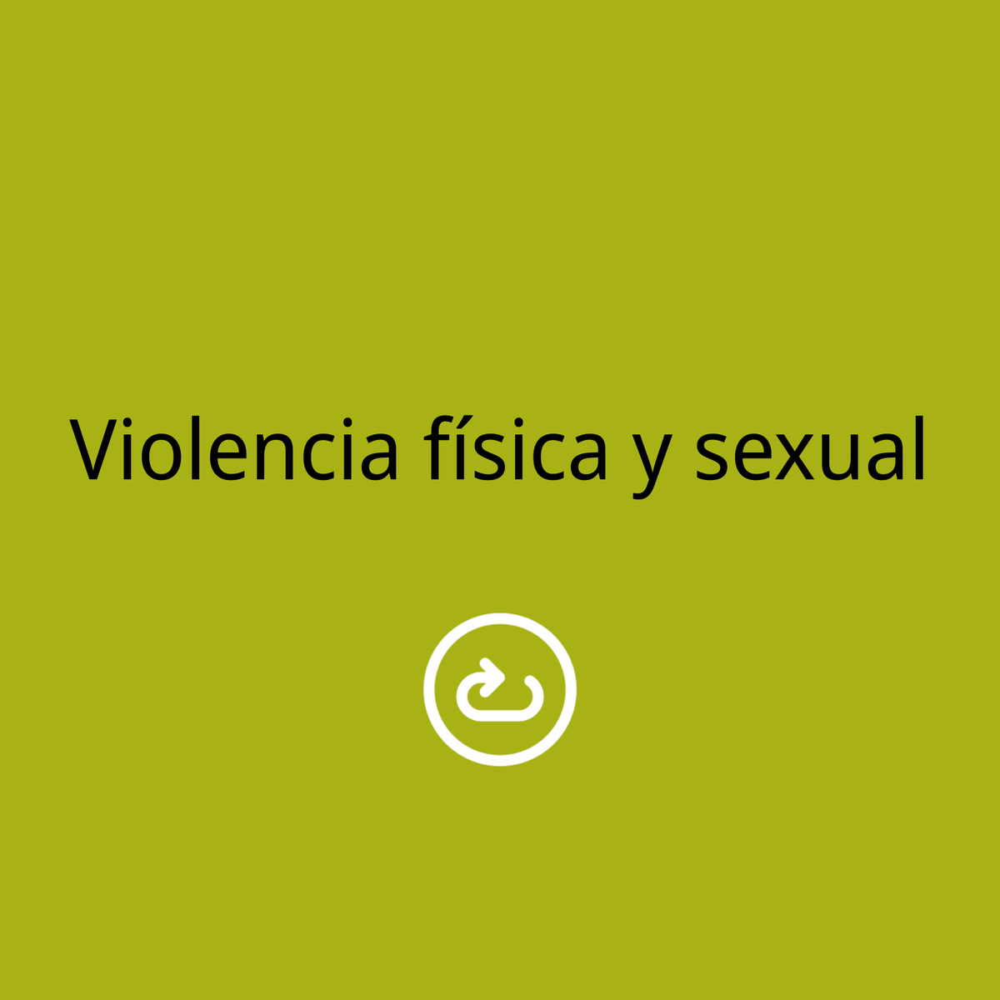
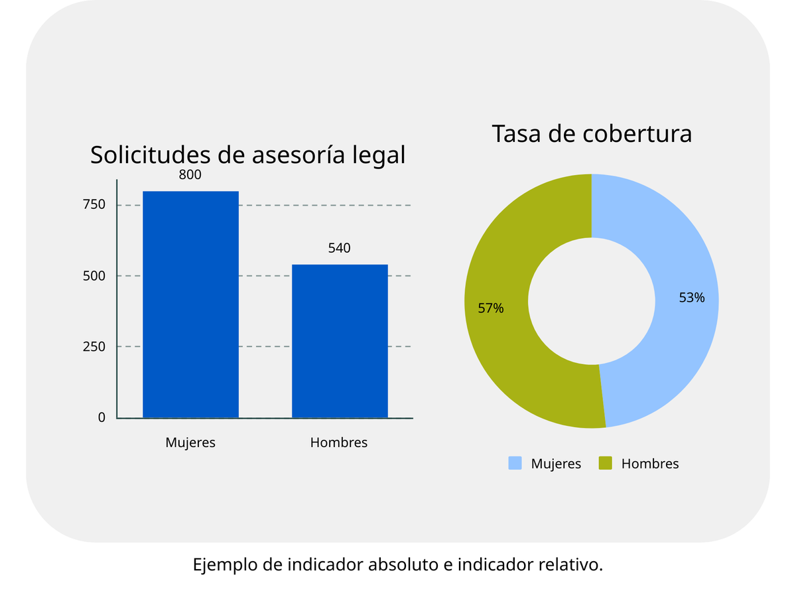
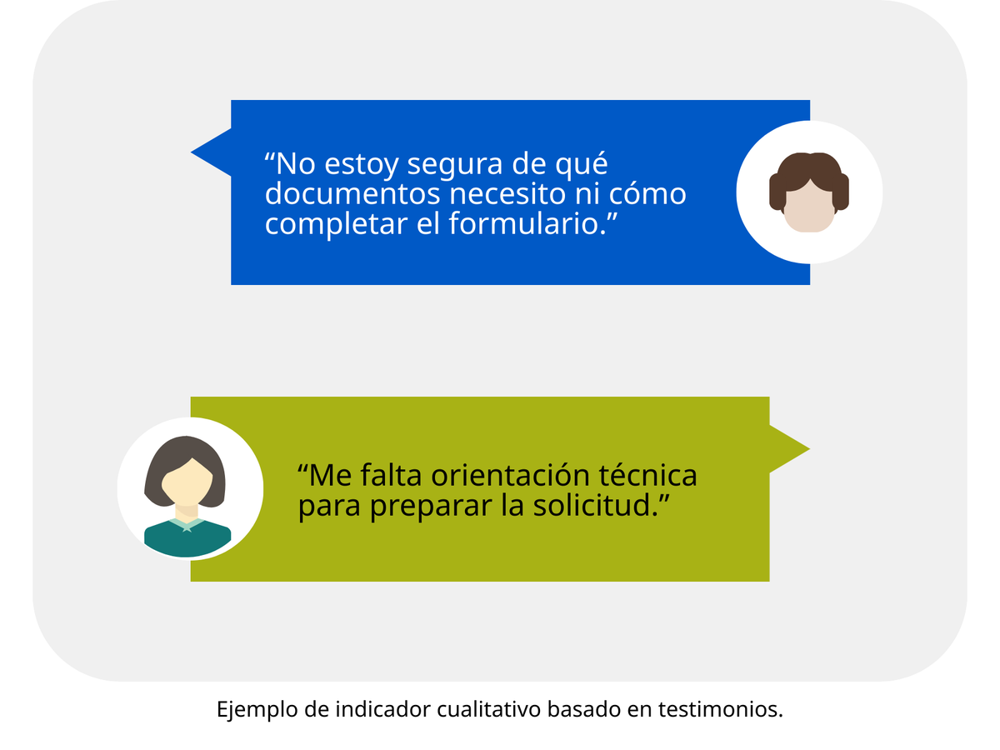

WIPO Academy · blended course

Three Rise 360 modules, three learner guides, three live sessions.

Three hours self-paced plus 3.5 hours live, published as SCORM.

Writing guide (Spanish). Tone, register, inclusive language.

Editorial guide. Terminology, conventions, referencing.

Rise 360 template. Spanish labels and reusable layouts for all modules.
UbD · transfer goal → outcome → level
| Transfer goal | Course outcome | Level |
|---|---|---|
| Recognise and address gender bias in IP processes | Identify key gender biases, barriers and discriminatory practices | Analyse |
| Develop a Gender Action Plan for their office | Develop a GAP aligned with institutional objectives | Create |
| Advocate for data-driven decisions | Analyse internal and external dimensions of mainstreaming | Evaluate |
| Use gender-sensitive indicators | Apply indicators to monitor and evaluate equality measures | Apply |
Module 2 · outcome → assessment evidence
| Outcome | Evidence | Type |
|---|---|---|
| Define gender mainstreaming | Auto-graded quiz, drag-and-drop definitions | Formative |
| Differentiate internal / external | Scenario classifying office actions | Formative |
| Apply tools in office areas | Mini-case on one department | Performance |
| Apply across functions | Zoom group exercise; GAP reflection | Transfer |
| All outcomes | Final test, items plus two case scenarios | Summative |

Storyboard. Text, media, alt text and file names per page.

The built page. Same lesson in Rise 360.

Infographic. Dual approach, M2.

Explainer video. Powtoon with voiceover, M1.

Data infographic. Women inventors, M1.

Flip cards. Concept pairs, M1.

Worked data examples. Indicator types, M3.

Qualitative indicators. Testimonials, M3.

Screen-reader template. Spanish interface labels, tested with a screen reader.

Accessibility guide. WCAG 2.1 AA translated into Rise decisions: typography, colour, imagery, video, layouts.

Facilitator kit. Purpose, timing and materials for each live session.

Lesson plan. Facilitator actions beside the suggested slide, segment by segment.